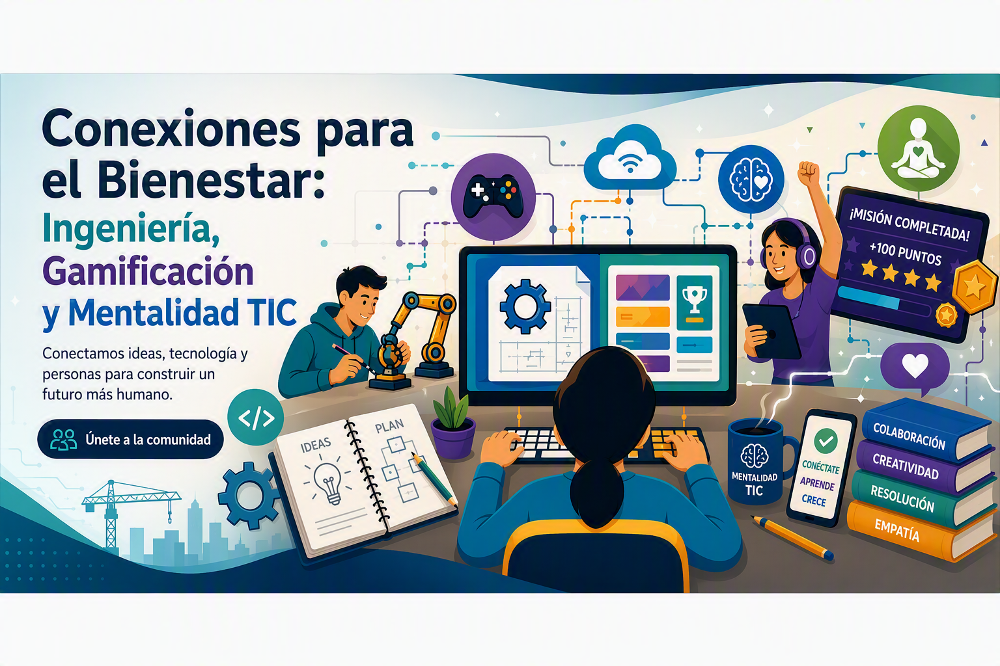

Explora los proyectos dinámicos interactivos desarrollados por los estudiantes integrando ingeniería, gamificación, tecnología e inteligencia artificial para potenciar el bienestar y las habilidades socioemocionales.